Her bir oýun seansy öz içine gürleýiş ukybyny we motorikasyny gowulandyrmaga hem-de jäjekler bilen oýnamaga gönükdirilen bolmaly. Çaga ýerli aýdymlary öwrediň. Çaganyň köpräk gülmekligini, köp zatlary aýdyp bermekligini we edýän hereketlerini size görkezýänligini goldaň. Çaganyň hemişe kadaly hereketleri etýänligini goldaň.
Jäjekler bilen sapaklar
Girlýänd ýüpe daýylan (6 aýlykdan soň)
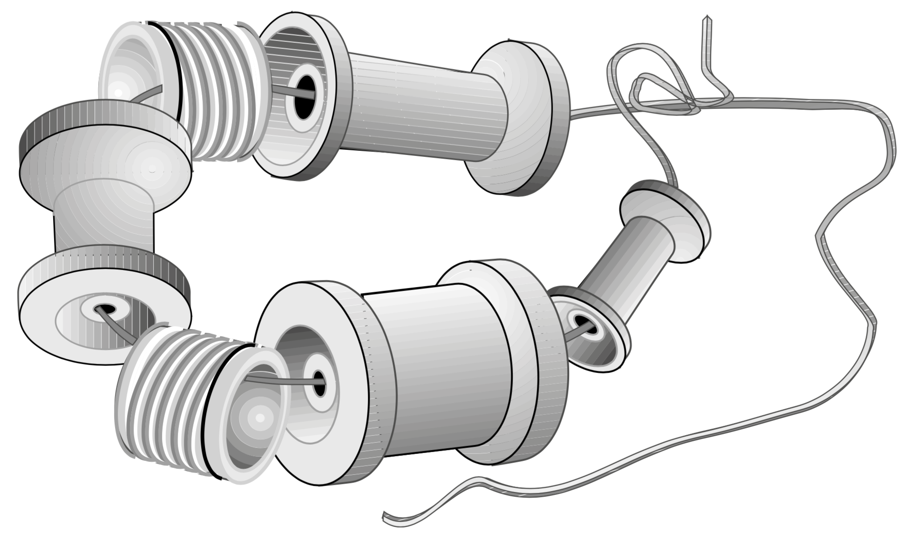Ýüpe boşan tigirleri we beýleki ownuk zatlary (mysal üçin, plastik çüýşeleriň uçlaryny) geçiriň. Ýüpi tegelek edip daňyň we bir yjyny yzynlygyna goýuň.
Kubikler (9 aýlykdan soň)
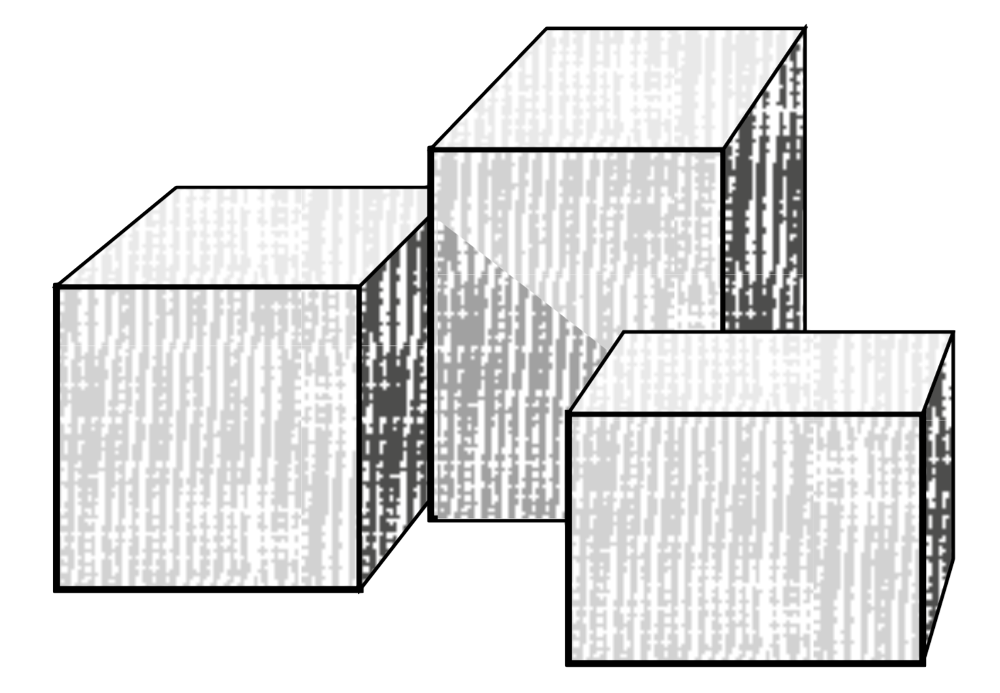Kiçijik tagtadan ýasalan kubikler. Taraplaryny naždak kagyzy bilen arassalaň we mümkin bolsa dürli açyk reňkler bilen reňkläň.
«Matreşka», bir –biriniň içine salynýan jäjek (9 aýdan soň)
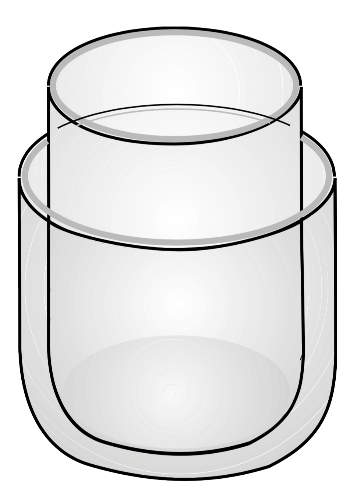Deň ölçegdäki çüýşeleriň aşaky bölegini kesip alyň. Kiçijik çüýşäni uly çüýşäniň içine salyň (gyralaryna çaganyň elini kesmez ýaly ýelmeç ýelmäp çykyň).
Içi zatly guty (9 aýdan soň)
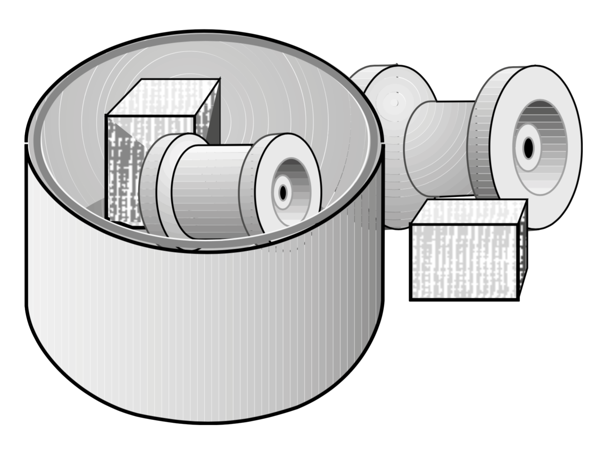Her bir ýelim ýa-da karton gury we kiçi bolmadyk zatlar (ownuk bolmaly däl, çagalar agzyna alyp bilmez ýaly).
Jyňňyrdaýan jäjek (12 aýdan soň)
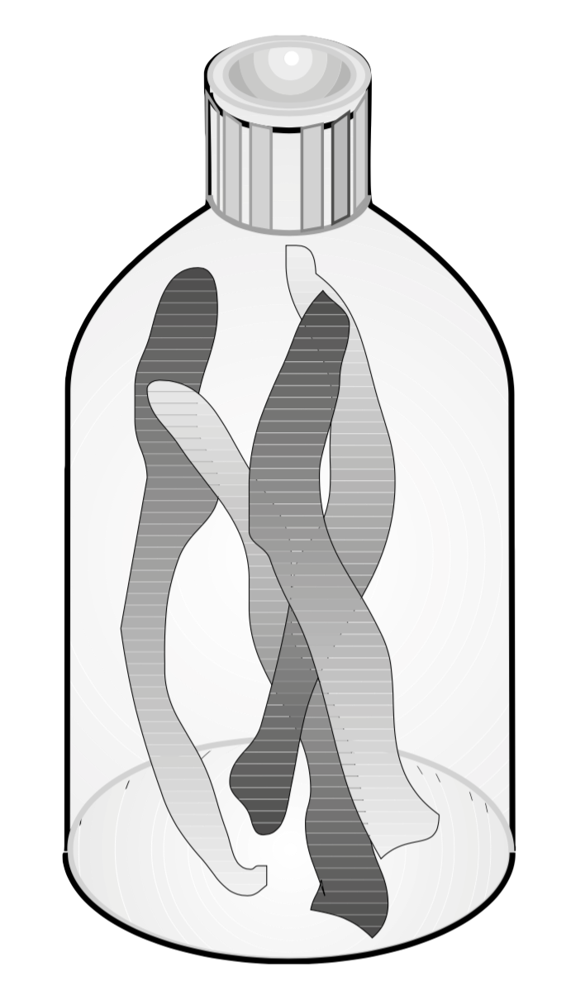Reňkli elim gutylarda inçejik zolaklary kesiň we olary kiçijik ýelim plastik çüýşä salyň we çüýşäniň agzyny berk ýapyň.
Baraban (12 aýlykdan soň)
Her bir demir çüýşe agzy berk ýarylan.
Gurjak (12 aýdan soň)
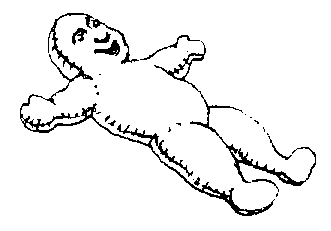Matany iki gat ediň we gurjagyň suduryny kesip alyň we onuň iki gyrasyny gowy edip tikiň we bir gyrasynda kiçijik pagta dykar ýaly deşik goýuň. Tikilen gurjagy çöwüriň we ony pagta ýa-da mata bölekleri bilen doldyryň. Deşik goýulan ýeri hem tikiň we gurjagyň ýüzüni galam bilen çekiň.
çine zatlar salar ýaly çüýşe (12 aýdan soň)
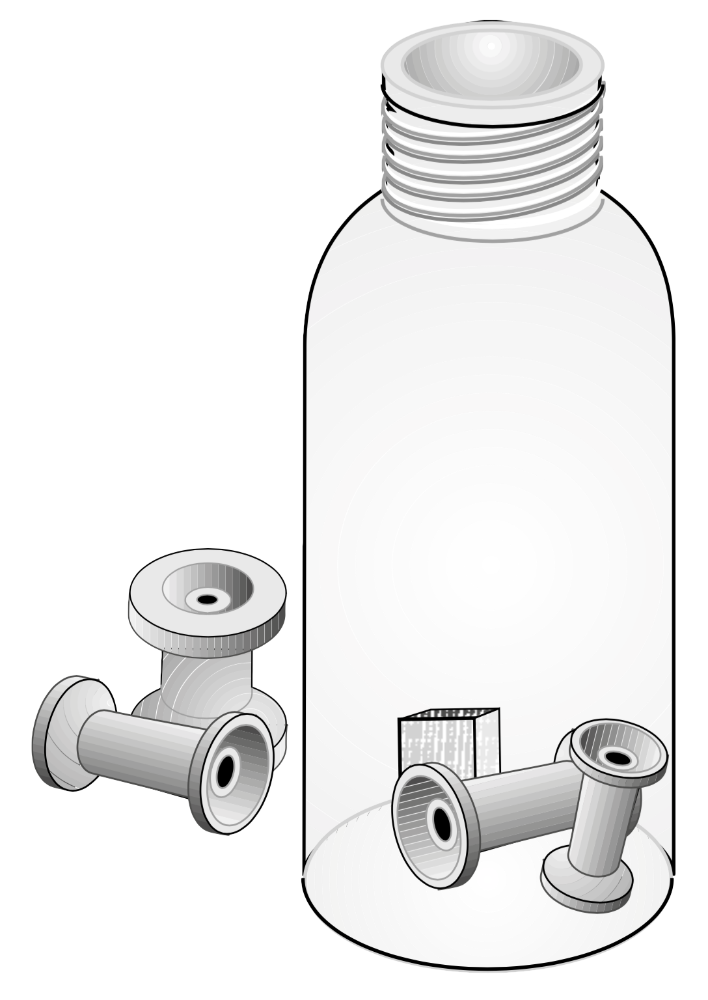Agzy uly we giň agyzly ýelim çüýşä ownuk zatlary ýa-da aşyklary salyň (içine salynýan zatlar ýeterlik derejede uly bolmaly çaga ýuwdup bilmez ýaly).
Öňüne salyp iter ýaly jäjek (12 aýlykdan soň)
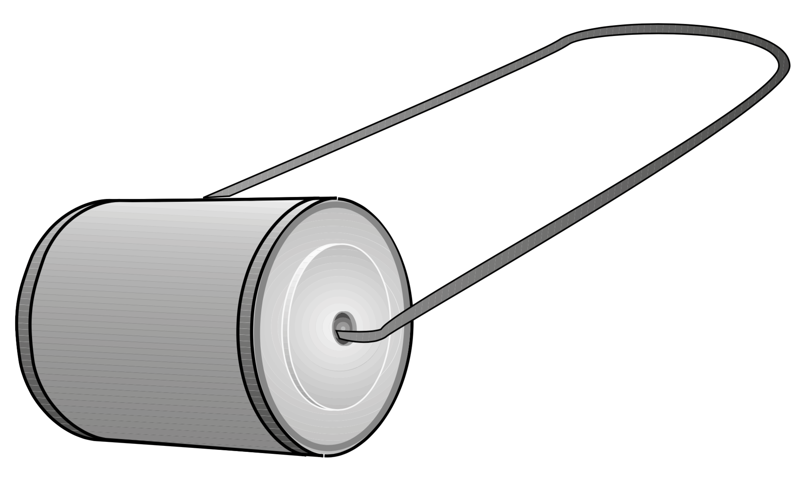Silindrik gutynyň iki tarapyndan deşik ediň. Bir bölejik symy gutynyň içinden geçiriň (uzynlygy takmynan 60 sm) we olaryň uçlaryny berkidiň. Birnäçe demir gapyrjaklary onuň içine salyň we gutynyň agzyny ýapyň.
Yzyndan süýrär ýaly jäjek (12 aýdan soň)
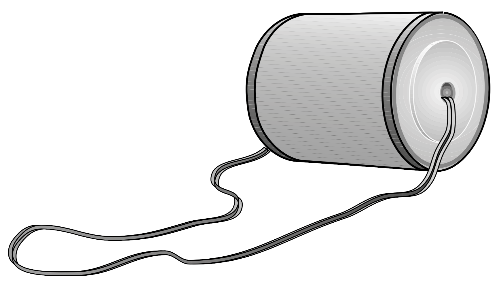Taýýarlanylyşy – ýokarda agzalyşy ýaly, demir syma derek ýüp ýa-da ýumşak şnur ulanylýar.
Ýelim çüýşeleriň ýokarky böleklerinden ýaşalan piramida (12 aýlykdan soň)
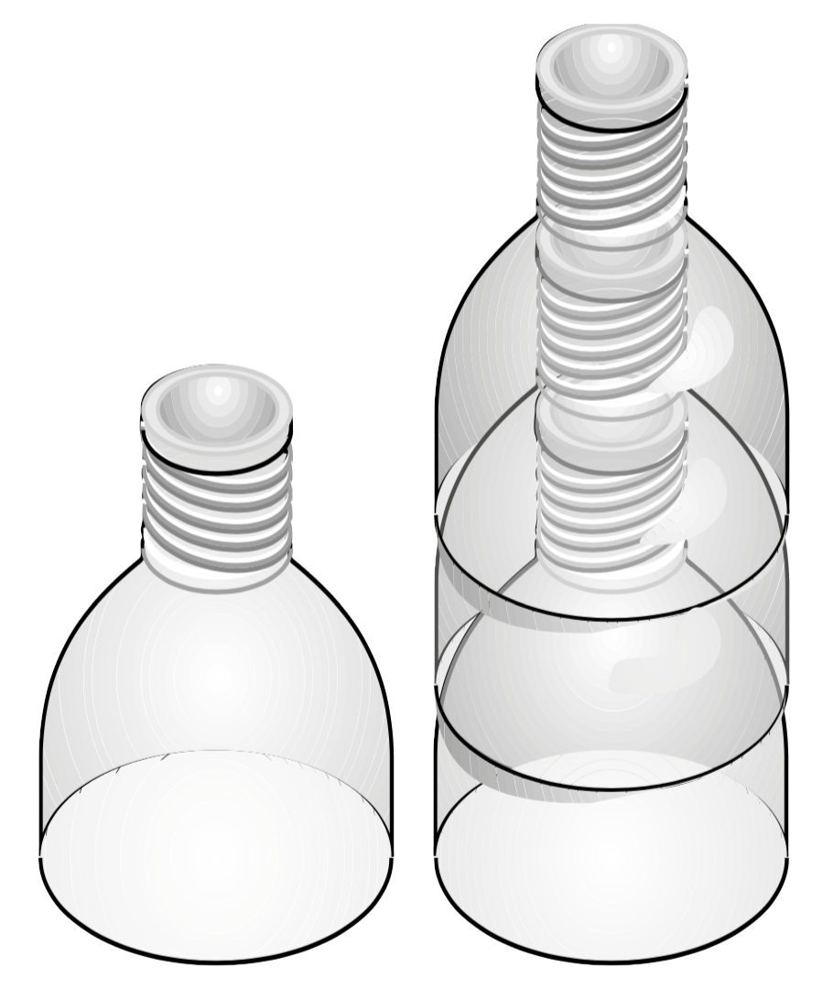Üç sany deň ölçegdäki ýelim çüýşelerioň ýokarky böleklerini kesiň we olaryň gyralaryna ýelmeç ýelmäň, çaganyň elini kesmez ýaly we bir – biriniň üstüne goýuň.
Aýna (18 aýdan soň)
Polirirlenen demir gapyrjak, ýiti gyralary bolmadyk.
Surat-tapmaça (18 aýlykdan soň)
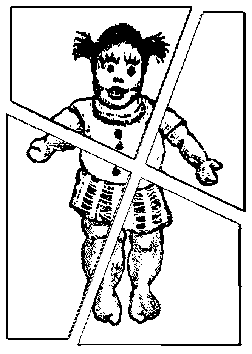Dürli reňkli galam bilen surat çekiň, mysal üçin gurjagyň we ony iki ýa-da dört bölege bölüň.
Kitap (18 aýdan soň)
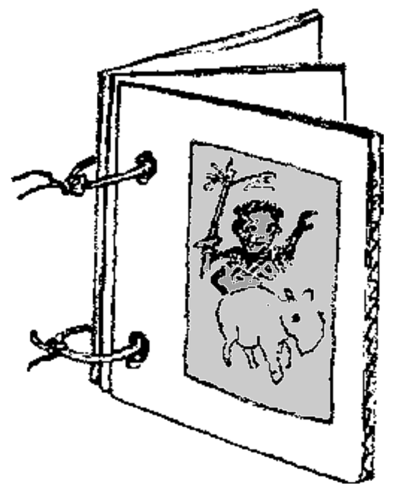Üç sany deň taraply karton kagyzyny gyrkyp alyň. Her bir karton kagyzyň iki tarapyna hem dürli suratlary çekiň. Karton kagyzlarynda iki sany deşik ediň we ýüp ýa-da şnur bilen olary berkidiň, kitapjyk bolar ýaly.